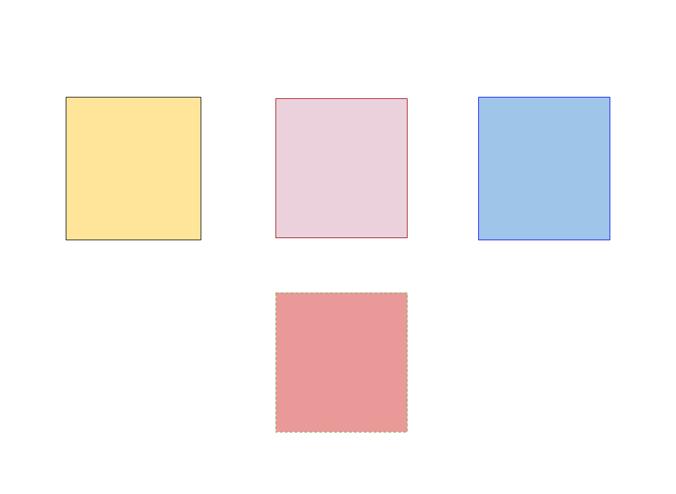

Introduction to
Git and Git workflow practices
- Achyut Dev / @achyutdev
Outline
Introduction
Git is a Distributed Version Control System.
Created by Linus Torvalds, founder of linux kernel.
Reliable branching and merging.
Git stores full local history.
Code Hosting sites
How it works?
Create repository
$ git init .
Initialized empty Git repository in /achyutdev/projects/Demo/.git/
Clone repository
$git clone git@github.com:achyutdev/ppt-on-git.git
Git Four Areas
Git Four Areas
Git Four Areas
Move code change from left to right
$ git add .
#Code changes move to staging area
$ git commit -m "New changes are added"
#Code changes move to repository with a new commit
$ git diff
#compare code change between working area and staging area
$ git diff --cached
#compare code change between staging area and repository
Git Four Areas
Move code change from right to left
$git rm --cached
## remove indexed file
## do not use git rm
$git reset <--option> < HEAD/Commit number>
--hard: copy commit file to working area and index
--mixed:copy commit file to index only
--soft: Does not touch the index file or the working file
$git revert < commit>
add new commit which is opposite than last
revert does not mean "undo"
Repository

Stash
Stash the changes in a dirty working directory away
# file.txt is change and added to index
$git add file.txt
# folder's file are just edited
# we require working tree clean without removing current changes

Stash
Stash the changes in a dirty working directory away
$git stash --include-untracked
$git status
# nothing to commit, working tree clean
# it saves current changes including indexed to stash
Stash
Stash the changes in a dirty working directory away
$git stash apply
$git stash clear
$git stash list
# git stash pop - apply stashed changes and clear.

Configuring Git
- System-level configuration
- git config --system
- Stored in /etc/gitconfig or c:\Program Files (x86)\Git\etc\gitconfig
- User-level configuration
- git config --global
- Stored in ~/.gitconfig or c:\Users\< NAME >\.gitconfig
- Repository-level configuration
- git config
- Stored in .git/config in each repo
Configuring Git
Example of git config
$git config --global --list
$git config --global user.name "Achyut Dev"
$git config --global user.email "achyut.dev@gmail.com"
$git config --global alias.lga log --graph --oneline --decorate
# more ...
Team Collaboration
Developer has own copy of the complete repo with local history with branches.
Instead of committing a changeset from a working copy to central repo, Git gives to share entire branches between repository.
Git Remote
$git remote add origin git@github.com:achyutdev/ppt-on-git.git
$git remote -v
Remote connection is like bookmark( e.g. origin )
Git reference to remote repo mainly two ways - HTTP and SSH
Git fetch
imports commits are stored on remote branches
working code do not change
$git fetch
#Download all the branches and commits from remote
$git fetch origin myNewBranch
#update commits from myNewBranch branch
`Sync` operation in SVN
Git pull
$git pull origin
#pull the commit from remote repo and merge with local
$git pull --rebase origin
#put local change on the top
rebase is - " I want to put my changes on top of what everybody else has done
SVN Update
Git push
$git push < remote> < branch>
$git push --force origin master(don't use this)
#force push replace commits with local commit
$git push origin < tag>
#usually use for release number.
Standard Methods
- make sure local branch is up-to-date
- clean up commits - interactive rebase is good option
- share commit - push
$git fetch < remote> < branch>
#git pull is another option
$git rebase -i < remote/branch>
#edit commit history - squash commit, fix up commit ..
$git push < remote> < branch>
Not for centralized workflow
Git branch
branch is just reference to commit & represent tip of a series of commit.
$git branch < branchName>
can delete branch without losing history after merge is done
Git Checkout
checkout update source code in working area
$git checkout < existing branch/commit>
#switch to branch or commit
$git checkout -b < new-branch>
#create new branch and switch to that branch
which is called "detached HEAD" state - handle with care
Git merge
current branch take update from other branch and other branch remain unaffected
$git merge < branch>
$git merge --no-commit --no-ff < branch>
#do not create merge commit
3-way merge can have merge conflict
Resolving Conflicts
$git merge < branch>
Auto-merging file.txt
CONFLICT (content): Merge conflict in file.txt
Automatic merge failed; fix conflicts and then commit the result.
#edit files
$git add file.txt
$git commit -m "branch is merge to master"
and doing fast forward merge
Exploring History
$git log --graph --decorate --oneline
$git show < commit> (or branch or HEAD)
$git show HEAD^^ ( or HEAD~2)
$git blame file.txt
$git diff HEAD HEAD~2
$git log --grep text --oneline
$git log branch..master --oneline
$git reflog
Git Workflows
Fragments
Hit the next arrow...
... to step through ...
... a fragmented slide.
Fragment Styles
There's different types of fragments, like:
grow
shrink
fade-out
fade-up (also down, left and right!)
current-visible
Highlight red blue green
Much more
- Right-to-left support
- Extensive JavaScript API
- Auto-progression
- Extensive JavaScript API
- Auto-progression
Background Transitions
Different background transitions are available via the backgroundTransition option. This one's called "zoom".
Reveal.configure({ backgroundTransition: 'zoom' })